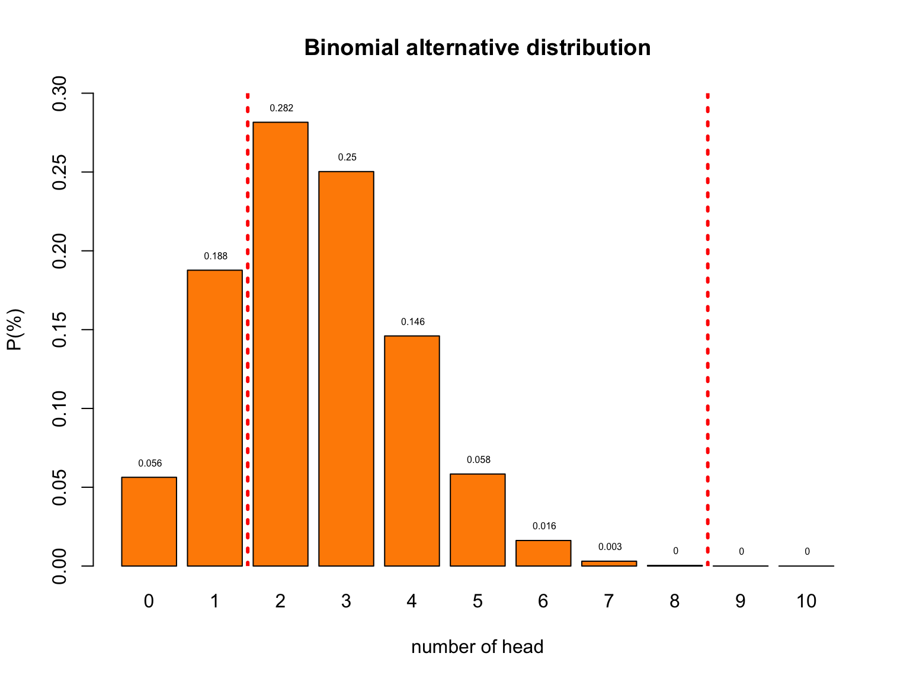
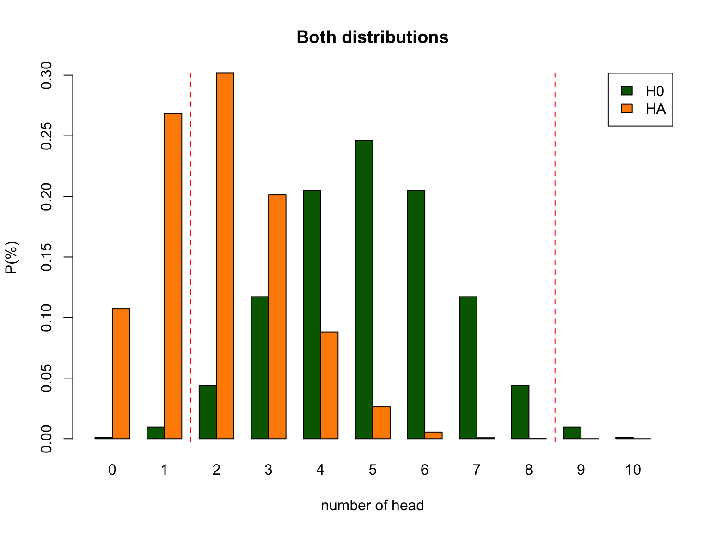

Statistical Reasoning
Null Hypothesis Testisn
Klinkenberg
03 sep 2020
Learning
Reasoning in statistics
Source: ARTIST
Statistical Literacy
- Knowledge (Basic understanding of concepts)
- Identify
- Describe
- Skils (Ability to work with statistical tools)
- Translate
- Interpret
- Read
- Compute
Statistical Reasoning
- Understanding
- Explain why
- Explain how
Statistical thinking
- Apply
- What methods to use in a specific situation
- Critique
- Comment and reflect on work of others
- Evaluate
- Assigning value to work
- Generalize
- What does variation mean in the large scheme of life
Empirical Cycle
By Adriaan de Groot
The components
- Observation
- Idea for hypothesis
- Induction
- General rule
- Hypothesis
- Deduction
- Expectation / Prediction
- Operationalization
- Testing
- Test hypothesis
- Compare data to prediction
- Evaluation
- Interpret results in terms of hypothesis
Explained by Annemarie Zandscholten
Experiment
Heads

bit.ly/2j54A2U
Emperical Cycle
- Observation Patiënt is showing post traumatic symptoms
- Induction Can we diagnose PTSS
- Deduction \(H_0\): P: fair coin → C: patiënt is balanced
- Deduction \(H_A\): P: Unfair coin → C: patiënt is unbalanced
- Deduction \(H_A\): P: data \(\neq\) EV → C: is unbalanced
- Testing Choose \(\alpha\) and Power
- Evaluation Make a decision
Null distribution
Let’s analyse the null distribution of the results.
Distributions
What is the difference between
- Population distribution
- Sample distribution
- Samples distribution
Binomial distribution
\[ {n\choose k}p^k(1-p)^{n-k} \\ {n\choose k} = \frac{n!}{k!(n-k)!} \]
With values:
Probabilities

Testing
I landed 2 times head. Can we conclude PTSS?
- As you can see from the distribution of healthy coins, we cannot conclude that by definition.
- What we can do is indicate how rare 2 is in a healthy population.
Testing
- Based on the null distribution we can see that the expected value (EV is 5.)
- We can now define the \(H_0\) hypothesis: \(H_0 = 5\)
- What is the alternative hypothesis?
- The alternative hypothesis describes a situation where PTSS is pressent.
- We could say that the alternative hypothesis is not 5.
- \(H_A \ne 5\)
- We could also formulate our \(H_0\) and \(H_A\) more abstract:
- \(H_0:\) the patient is balenced
- \(H_A:\) the patient is unbalenced
- What criterium should we use to conclude that one would be unbalenced?
- In the social sciences this \(\alpha\) criteria is often 5%.
- I tossed 2 times head. That is more frequent than 5%.
- Therefore, we conclude that our patient is probably healthy but we can never be sure.
- My coin could still be part of the unbalenced population.
Null distribution

Alternative Distribution
But we have no clue of what this distribution could look like.
For now let’s assume the probability of landing heads for my coin is .25

\(H_0\) and \(H_A\) distribution

Null Hypothesis
Significance Testing


\(H_0\) and \(H_A\)
|
\(H_0\)
|
\(H_A\)
|
Frequentist probability
- Objective Probability
- Relative frequency in the long run
Standard Error
95% confidence interval
\[SE = \frac{\text{Standard deviation}}{\text{Square root of sample size}} = \frac{s}{\sqrt{n}}\]
- Lowerbound = \(\bar{x} - 1.96 \times SE\)
- Upperbound = \(\bar{x} + 1.96 \times SE\)

Standard Error
- n₁ =
- n₂ =
Binomial \(H_0\) distribution
n = 10 # Sample size
k = 0:n # Discrete probability space
p = .5 # Probability of head
munt = 0:1
permutations = factorial(n) / ( factorial(k) * factorial(n-k) )
# permutations
p_k = p^k * (1-p)^(n-k) # Probability of single event
p_kp = p_k * permutations # Probability of event times
# the occurrence of that event
title = "Binomial Null distribution"
# col=c(rep("red",2),rep("beige",7),rep("red",2))
barplot( p_kp,
main=title,
names.arg=0:n,
xlab="number of head",
ylab="P(%)",
col='beige',
ylim=c(0,.3) )
# abline(v = c(2.5,10.9), lty=2, col='red')
text(.6:10.6*1.2,p_kp,round(p_kp,3),pos=3,cex=.5)
Binomial \(H_A\) distribution

Decision table
| \(H_0\) = True | \(H_0\) = False | |
|
Decide to reject \(H_0\) |
Type I error Alpha \(\alpha\) |
Correct True positive = Power |
|
Decide not to reject \(H_0\) |
Correct True negative |
Type II error Beta \(\beta\) |
Alpha \(\alpha\)
| \(H_0\) = True | \(H_0\) = False | |
|
Decide to reject \(H_0\) |
Type I error Alpha \(\alpha\) |
Correct True positive = Power |
|
Decide not to reject \(H_0\) |
Correct True negative |
Type II error Beta \(\beta\) |
- Incorrectly reject \(H_0\)
- Type I error
- False Positive
- Criteria often 5%
- Distribution depends on sample size

Power
| \(H_0\) = True | \(H_0\) = False | |
|
Decide to reject \(H_0\) |
Type I error Alpha \(\alpha\) |
Correct True positive = Power |
|
Decide not to reject \(H_0\) |
Correct True negative |
Type II error Beta \(\beta\) |
- Correctly reject \(H_0\)
- True positive
- Power equal to: 1 - Beta
- Beta is Type II error
- Criteria often 80%
- Depends on sample size

Post-Hoc Power
- Also known as: observed, retrospective, achieved, prospective and a priori power
- Specificly meaning:
The power of a test assuming a population effect size equal to the observed effect size in the current sample.
Source: O’Keefe (2007)
Effect size
In statistics, an effect size is a quantitative measure of the strength of a phenomenon. Examples of effect sizes are the correlation between two variables, the regression coefficient in a regression, the mean difference and standardised differences.
For each type of effect size, a larger absolute value always indicates a stronger effect. Effect sizes complement statistical hypothesis testing, and play an important role in power analyses, sample size planning, and in meta-analyses.
Source: WIKIPEDIA
Effect size

1 - alpha
| \(H_0\) = True | \(H_0\) = False | |
|
Decide to reject \(H_0\) |
Type I error Alpha \(\alpha\) |
Correct True positive = Power |
|
Decide not to reject \(H_0\) |
Correct True negative |
Type II error Beta \(\beta\) |
- Correctly accept \(H_0\)
- True negative

Beta
| \(H_0\) = True | \(H_0\) = False | |
|
Decide to reject \(H_0\) |
Type I error Alpha \(\alpha\) |
Correct True positive = Power |
|
Decide not to reject \(H_0\) |
Correct True negative |
Type II error Beta \(\beta\) |
- Incorrectly accept \(H_0\)
- Type II error
- False Negative
- Criteria often 20%
- Distribution depends on sample size


P-value
Conditional probability of the found test statistic or more extreme assuming the null hypothesis is true.
Reject \(H_0\) when:
- \(p\)-value <= \(alpha\)

Test statistics
Some common test statistics
- Number of heads
- Sum of dice
- Difference
- \(t\)-statistic
- \(F\)-statistic
- \(\chi^2\)-statistic
- etc…
Decision Table
N = 10 # Sample size
H0 = .5 # Probability of head under H0 50/50
HA = .2 # Aternative expected value
alpha = .05 # Selected type I error
# Color areas red for selected alpha
area <- dbinom(0:N, N, H0) < alpha/2
# barplot(dbinom(0:N,N, HA)) -> x.values
# x.values
# lb <- x.values[c(qbinom(alpha/2, N+1, H0), qbinom(alpha/2, N+1, H0)+1 )]
# ub <- x.values[c(qbinom(1-(alpha/2), N+1, H0), qbinom(1-(alpha/2), N+1, H0)+1 )]
#
# mlb <- mean(lb)
# mub <- mean(ub)
col = rep("beige", N+1)
col[area] = "red"
col2 = rep("red", N+1)
col2[area] = "beige"
# Delete # to not color the plots
# col = col2 = "beige"
layout(matrix(1:9,3,3, byrow=T))
plot.new()
text(0.5,0.5,"Binomial Distribution",cex=1.5)
# text(0.5,0.1,paste("N:",N),cex=1.5)
plot.new()
text(0.5,0.5,"H0 True",cex=2)
plot.new()
text(0.5,0.5,"H0 False",cex=2)
plot.new()
text(0.5,0.5,"Reject H0",cex=2)
barplot(dbinom(0:N,N, H0),
col = col,
# yaxt = 'n',
main = 'Alpha / Type I error',
names.arg = 0:N,
cex.names = 0.7)
# abline(v = mlb, col="red", lwd=3, lty=2)
# abline(v = mub, col="red", lwd=3, lty=2)
barplot(dbinom(0:N,N, HA),
col = col,
yaxt = 'n',
main = 'Power',
names.arg = 0:N,
cex.names = 0.7)
plot.new()
text(0.5,0.5,"Accept H0",cex=2)
barplot(dbinom(0:N,N, H0),
col = col2,
# yaxt = 'n',
main = '1 - alpha',
names.arg = 0:N,
cex.names = 0.7)
barplot(dbinom(0:N,N, HA),
col = col2,
yaxt = 'n',
main = 'Beta / Type II error',
names.arg = 0:N,
cex.names = 0.7)
Reasoning Scheme
R<-PSYCHOLOGIST
Source: Kristoffer Magnusson